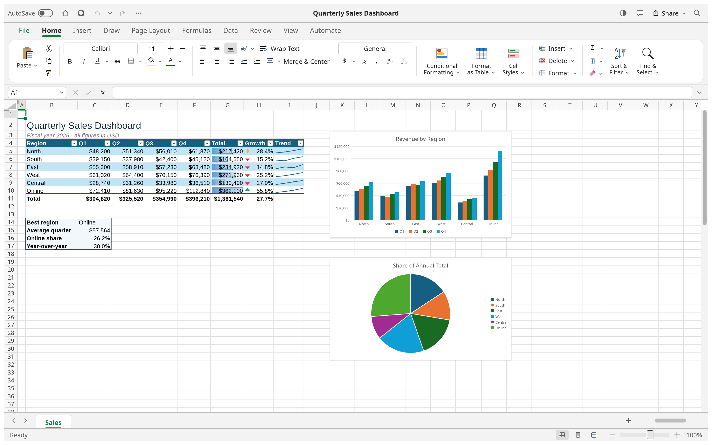

Código abierto · MIT OR Apache-2.0 · x86_64 Linux
PicoSoft-Exsel es una hoja de cálculo escrita en Rust: arranca en un instante,
abre .xlsx sin convertirlos y funciona entera en tu equipo. Sin cuentas, sin
telemetría, sin suscripción.

Cuatro paquetes, el mismo programa. Elige el de tu distribución.
Debian · Ubuntu · Linux Mint · elementary
sudo apt install ./picosoft-exsel-0.5.0-linux-x86_64.deb
23,1 MB
Fedora · RHEL · openSUSE · Mageia
sudo rpm -i picosoft-exsel-0.5.0-linux-x86_64.rpm
24,1 MB
Cualquier distro · sin instalación
chmod +x *.AppImage && ./picosoft-exsel-0.5.0-linux-x86_64.AppImage
20,7 MB
Flatpak · aislamiento por sandbox
flatpak install --user ./picosoft-exsel-0.5.0-linux-x86_64.flatpak
15,4 MB
Requisitos: glibc ≥ 2.35 (Ubuntu 22.04 o superior) · ID de aplicación
ai.picosoft.exsel · paquetes firmados con hash SHA-256 publicados en el release.
Hojas de cálculo serias, sin pedirte permiso para nada.
Matemáticas, de texto, de fecha, lógicas, financieras y de búsqueda. 504 ya funcionan igual que en la hoja de cálculo de referencia.
Barras, líneas, dispersión, circular, combinados y paneles de control, con formato, series y ejes editables.
El formato abierto es su formato. Abre lo que te mandan y guárdalo sin perder fórmulas, estilos ni gráficos. También .ods y .csv.
274 comandos con atajos: desde la cinta, la terminal
(picosoft-exsel-cli), el canal de control o MCP. Tus agentes pueden
operarla entera.
Interfaz, funciones y formatos numéricos localizados: español, inglés, chino, japonés, coreano, ruso, portugués, checo…
Sin proceso de fondo, sin cuenta, sin telemetría. Arranca en caliente y se queda donde la dejaste.
Comprueba el checksum antes de instalar: cada archivo tiene su hash en el release.
# 1. descargas el paquete desde la página de Releases y lo verificas sha256sum picosoft-exsel-0.5.0-linux-x86_64.deb # 3f10fe0f47b249fa56a9d29d83be0d48239b92cb091c233a51de700d98358445 picosoft-exsel-0.5.0-linux-x86_64.deb # 2. lo instalas sudo apt install ./picosoft-exsel-0.5.0-linux-x86_64.deb # Debian/Ubuntu sudo rpm -i picosoft-exsel-0.5.0-linux-x86_64.rpm # Fedora/openSUSE ./picosoft-exsel-0.5.0-linux-x86_64.AppImage # cualquier distro flatpak install --user ./picosoft-exsel-0.5.0-linux-x86_64.flatpak # 3. lanzas picosoft-exsel --sample sales
| Archivo | Hash |
|---|---|
| …linux-x86_64.deb | 3f10fe0f47b249fa56a9d29d83be0d48239b92cb091c233a51de700d98358445 |
| …linux-x86_64.rpm | b1193ebaac743f892bef6812e840e1fd52bcef5a19d8c8a3e909fa1263dbbc94 |
| …linux-x86_64.AppImage | 12872ec3c926bc66d343f1d146d254d9c4b66bf38d441190fe23a2d957c3d6ee |
| …linux-x86_64.flatpak | 167c543e74ee30ee17a4da0e9250918ac566f51f53a019cb58ccdfd2167eef75 |